2021年游戏总结 上
转眼间 2021 年已经过去，这一年间也体验了很多不同平台、不同类型的作品。本文将对此做一个小小的总结，内容主要是个人对 2021 年玩过的游戏的一些个人想法。此外，由于篇幅受限，因此并不会包含所有的游戏，部分体验不够深入的或者无话可聊的游戏将不会出现。
双人成形
这算是今年玩过的最开心的游戏了，和两个室友花了大概 15 小时通关。
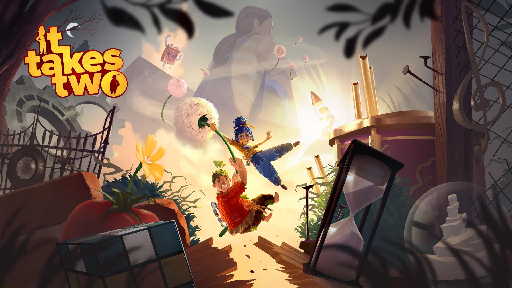
游戏在本身的关卡设计就很优秀，在融合了双人机制下更加显得精妙。且游戏对于资源的利用可谓毫不吝啬，每一大关就完全舍弃掉之前机制，完全变成“另一个游戏”。虽然这样各种机制浅尝辄止的设计理念可能会带来所谓的游戏深度不足，但这并不是本作所追求的，本作就是想给玩家一个极为丰富的一周目流程。仔细想想现在很多游戏的流程越来越长，但很多内容都是注水的，玩家在这些重复劳动的过程中可能会对游戏失去兴趣，最终导致游戏烂尾。而双人成形就是一个每个关卡细节精心编排打磨，每种机制总能在玩家感到无聊之前及时结束，从而转向新的机制。我在实际游戏过程中的感受也是如此，对之后关卡机制的期待是我在现在大部分游戏中所体会不到的。
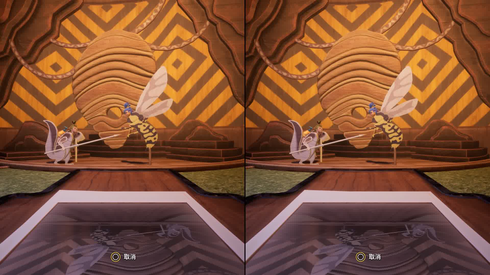
还有一点值得提的就是本作的箱庭式关卡设计，几乎每个关卡都会有一个箱庭式的“游乐园”以供调节游戏节奏。这些箱庭式关卡中遍布着的大量可供游玩的小物件，很多都是童年时的一些小玩具，看到让人会心一笑。本作中唯一的收集元素也是可以游玩的，它们是一些双人对战的小游戏，例如打地鼠之类的，很大程度上增进了玩家之间的感情（bushi）。
见证者
本作绝对是今年给我最大震撼的游戏，它让我认识一位偏执的布道者—— Jonathan Blow 以及他所贯彻的游戏哲学。
游戏最开始给人的印象只是一个简单的一笔画小游戏，但随着游戏进程的推进，玩家会发现基于这样一个极为简单的规则所衍生出的无数种可能性：例如镜像式的一笔画，将区域分块，构造指定形状等等。同时，部分谜题的设计不光基于 Pad（解题板） 本身，还与周围的环境相联系。有的谜题需要玩家在指定的角度观察才能看到答案；有的谜题则是将周围的环境进行抽象从而得到答案；还有的甚至需要根据环境的声音来得到答案。
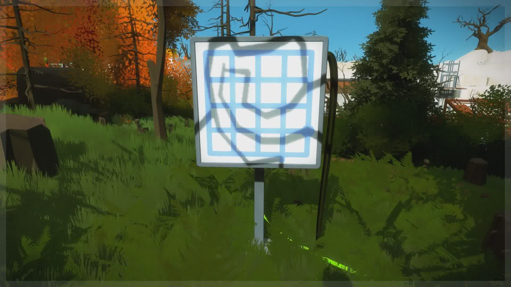
不仅于此，本作所呈现出来的整体感更是极为难得的。游戏几乎没有任何的 ui 界面，玩家与对于场景的机关控制同样是根据本作的核心机制——一笔画来实现的，这样的设计看似没有什么用处，实际上却极大地使得整个游戏系统更加合理自洽。
事实上，本作的谜题并不仅仅局限于 Pad 上的抽象线条，而是这一规则融入了整个游戏的地图之中。在游戏中，玩家可以在地图的各个角落找到 Pad 上的“蝌蚪文”图案，并且作为游戏的隐藏要素而存在。而类似这样的环境谜题事实上是 Blow 本人最开始真正想做的内容，而 Pad 上的谜题反而是后来才加上去的。
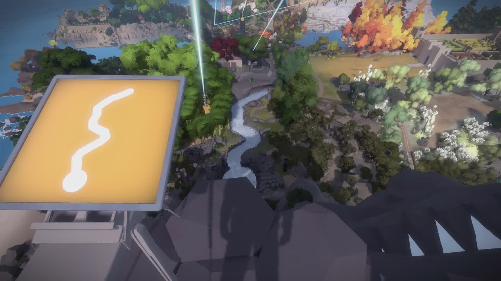
《见证者》是一个非常反传统的游戏，它与市面上几乎所有的游戏都有所区别。它所追求的是无奖励机制，这意味着玩家在解决谜题后事实上几乎不会得到任何的直接奖励，它的奖励只是玩家对游戏系统更深的理解，从这一角度上说，《见证者》相比其它游戏来讲更加纯粹。玩家通关游戏之后，一切归为原点，留下的只是玩家对游戏规则的更深层次的认知。
整个《见证者》的旅途其实就是一场追寻真理的旅途。回想人类文明的发展历程，自然界中很多的现象和规律并不在某一时间节点突然出现，它们其实一直都存在，只是当时人们对于世界的认知过于浅显，对此并没有感知。《见证者》的游戏历程亦是如此，如果在通关后重新开始游戏流程会发现，很多环境谜题都存在于游戏较为前期的区域，甚至游戏游戏隐藏结局的入口就存在于游戏最早期的场景，只是当时的玩家并不会注意到这一切。这样的设计也与本作所要传达的思想高度契合。
极限竞速：地平线5
早就听过这个系列的大名，直到今年入了 Xbox Series S 后才真正入坑该系列。
本作作为半娱乐半拟真的竞速游戏，可以说几乎适合所有对竞速游戏不反感的人游玩。首先是辅助功能非常完备，玩家可以非常深度的对游戏的难度进行定制。不想要复杂操作的玩家可以将尽量开启辅助功能跑跑圈看看风景，而渴望拟真竞速的硬核玩家也可以关闭一定的辅助功能体验不断练习提升技术的过程。
这个系列之所以那么令人着迷以至于成为如今娱乐竞速游戏的天花板很大程度上要归功于这个在如今游戏业界显得不那么正面的“公式化开放世界”。事实上，本作的开放世界非常的公式化，场景中遍布着供处理的清单任务，有的是比赛，还有的是供收集的广告牌和房车宝物等等。但是由于本作实质上是一个竞速游戏，竞速游戏的核心玩法就是跑图，因此公式化开放世界所为人诟病的重复性高、跑图繁琐等缺点在本作中都不再是缺点，它们共同是构建起了整个游戏的 GamePlay 部分。
本系列可能不是最好的竞速游戏，但一定是玩起来最开心的竞速游戏。
以下是我在游玩过程中的部分截图。
FIFA 21
本作毫不意外的成为了我 2021 年游戏时间最长的游戏（第二是 FIFA 20）。
作为年货足球游戏，在实况足球最新作转为免费游戏后算是真正成为了单机足球玩家的唯一选择了。游戏本身内容没有什么好聊的，简单聊聊它相比 FIFA 20 有哪些变化。
由于我几乎只玩生涯模式，因此也只关心生涯模式的变化。总而言之，本次生涯模式的改变并没有达到预期。比较大的一个改变是更改球员所踢的位置并且球员能力可以根据特定位置进行针对性的提升，这一点我觉得还是很不错的。此外球员的模拟训练会直接根据训练达到的最大评级自动进行，不用反复进行手动训练了，这也是一个比较好的改变。但印象中除此之外的改变就不明显了，尤其是球员生涯模式，几乎没有什么提升，还是糟糕的站位问题，仍然无法替补登场，位置设定仍然非常不合理。希望后面的作品能够有所改善。
伊迪斯芬奇的记忆
电子游戏相较于其他艺术形式的最主要区别在哪？答案是交互性。而《伊迪斯芬奇的记忆》就是这样一个利用游戏的交互性将叙事能力发挥到极致的作品。
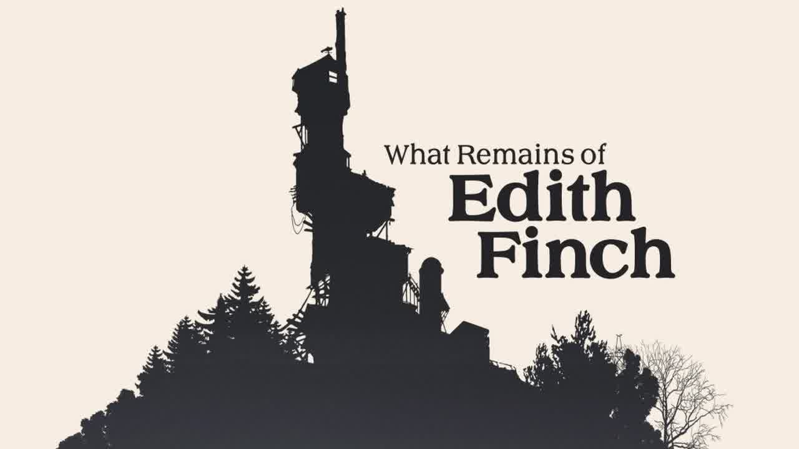
本作作为步行模拟器，并没有传统游戏中所谓的“玩法”，或者说，本作的玩法其实就是它的交互式叙事部分。游戏中的字幕并不像其它游戏那样作为 ui 层，独立于游戏之外，而是嵌入在游戏之中，作为一个整体，这样极大了提升游戏的沉浸感。
本作的叙事手法简直就是天马行空，利用十余个不同的表现形式极为自然的阐述了芬奇家族人们因为意外而去世的过程。死亡本是个无比沉重的话题，游戏中家族成员的死亡方式又基本是突然的意外死亡，游戏却用极为华丽的手法将死亡渲染的轰轰烈烈，并且这一切都与玩家的交互密切相关，真正将游戏这种艺术形式的特点发挥的淋漓尽致。
小小梦魇2
综合素质非常优秀的恐怖冒险解谜游戏。《小小梦魇2》大体上沿袭了一代的框架，并没有做出什么比较大的改变，但整体的游玩体验上却比一代好上不少。
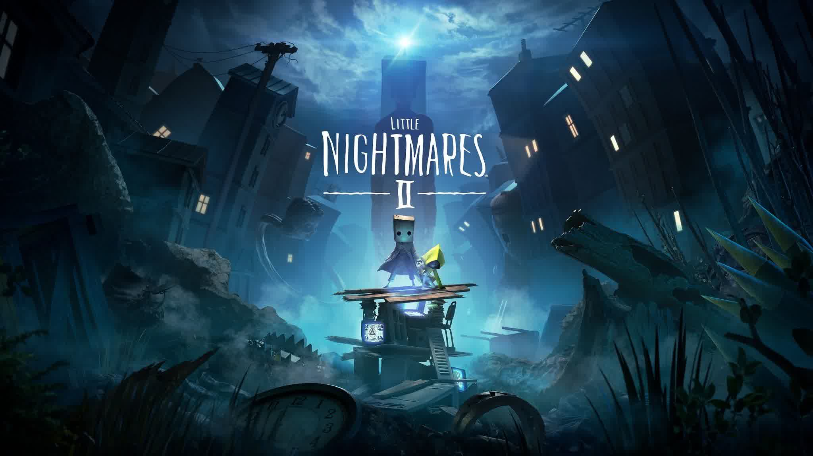
首先是谜题设计有一定提升。一代给我的感觉更偏向于动作冒险游戏，谜题的量不多且质量也一般，但二代在这方面有比较明显的提升。尤其部分关卡的隐性引导做得很好，十分自然地提示给玩家谜题的解决方案。
其次就是关卡节奏上，每个部分间的衔接过渡非常自然，潜入、逃脱、解密三者以一个非常合理的比例分配在整个游戏流程之中，让玩家时刻保持在心流状态下。本作流程并不长，我通关大概花了 7 小时，由于本作出色的节奏控制，我几乎是一口气通关的。
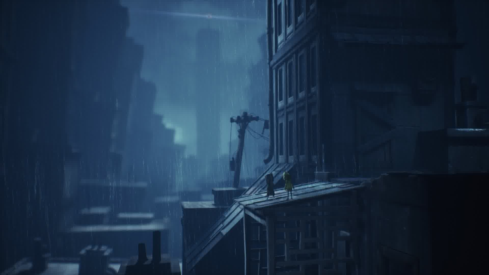
最后还想聊一聊这个系列的 3D 场景，本系列的 3D 场景无疑是把双刃剑。一方面它极大的增强了游戏的氛围和敌人的压迫感；但另一方面它使得系列的操作和跳跃判定十分糟糕，这些问题即使到了二代也依旧存在。因为角色与互动对象不在同一个 z 轴从而互动失败的情况屡屡发生。还有一点令人失望的部分在于本作的牵手系统更像是对上田文人《ico》的致敬，而并没有我最初想像的将其融合到游戏机制当中，但这也无伤大雅。综合来看，《小小梦魇2》绝对是一款不容错过的作品。
空洞骑士
独立游戏中的“大作”，本作的内容非常丰富并且完成度很高。
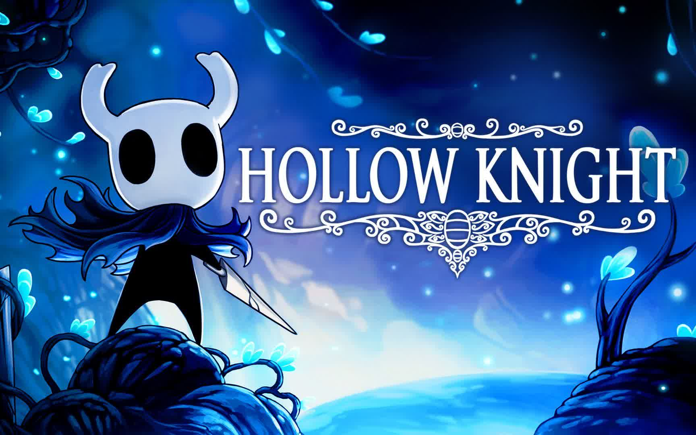
本作用一个不那么友好的词来形容就是“缝合怪”，大体框架继承自 Metroveinia 的自由探索玩法，死亡机制与隐性叙事又借鉴自《黑暗之魂》系列。但《空洞骑士》却不是一个拙劣模仿的产物，它很好的将这些要素加以融合，加之一定的微创新，最终形成了属于自己的一套框架。
我认为本作设计非常好的一个机制便是地图标记，玩家可以在一些当前需要特定能力解锁的区域添加特定的标记，以便后续针对性的探索。这样很好的解决了银河恶魔城游戏迷路的窘境，同时极大地增强了地图的探索欲望。本作的另一个亮点就是它的战斗系统，战斗系统虽然并不复杂，但是本作出色的手感调教和 boss 战设计使得这样简约而不简单的战斗十分流畅且具有观赏性。制作组显然也是知道本作的优势所在，于是在后面的版本中更新了 boss rush 模式，也成为了很多玩家研究练习的舞台。
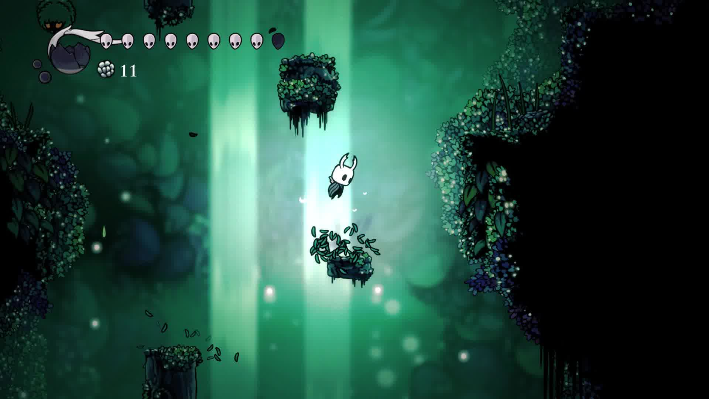
但本作也并非做到完美，它在玩家体验层面上还是有很多不令人满意的部分。首先便是平台跳跃关卡，个人认为这个部分确实有些多余，主要原因还是本作的跳跃手感实在不敢恭维，加上这一部分与其它关卡体验上有些割裂。其次就是本作难度曲线控制并不平稳，很大程度上还是游戏对于玩家的关卡引导不够明确，玩家很容易陷入此时的关卡是否是主线目的地的困惑当中，这样的情况会遍布在游戏的整个流程，使得整个游戏流程体验较为破碎。
但本作的整体优异表现还是值得推荐给所有喜欢银河恶魔城游戏的玩家，话说丝之歌怎么就没消息了呢？
影子工厂
《去月球》系列的第三部也可能是最后一部作品，又是一个美好且温馨的故事。
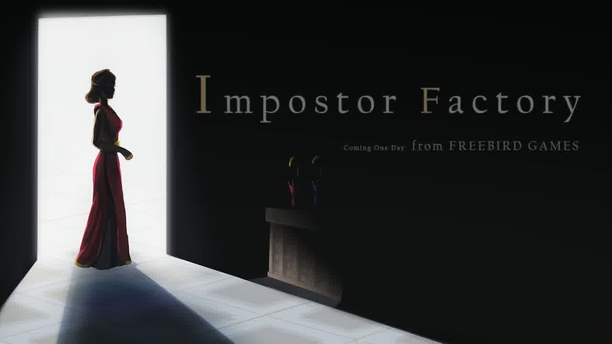
本作故事上的冲击性可能没有前作《去月球》和《寻找天堂》来的强烈，但却是成为了我三部作品中最喜欢的一部。很大的原因是本作引入了更多叙事上的技法，悬念设计相较以往作品更为出色，最后以一个十分美好且令前作玩家震惊的方式将三部曲串联起来，为三部曲画上一个完美的句号（大概）。本作的故事值得反复回味，不得不佩服高瞰老师对于人物情感上的刻画，让一个比较普通的不能再普通的故事讲述的如此令人动容。
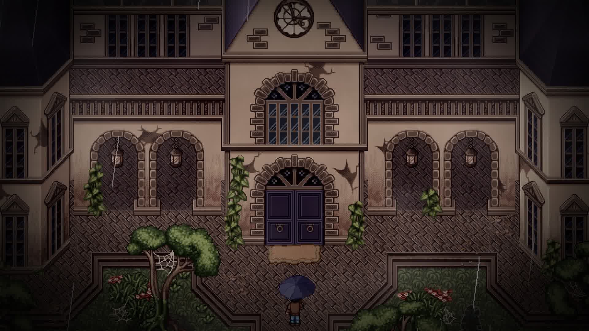
此外本作基本舍弃了那些与叙事无关的“小游戏”部分，个人认为这是非常明智的选择。前两作可能是为了更加贴近所谓的游戏，而比较强行地加入类似拼图等小游戏，但这些与游戏实际玩法割裂的部分在我看来实际上打乱了游戏的节奏。而本作在叙事上给我的感受就是流畅，全程无尿点，时刻都有一定的悬念吸引着玩家。
虽然本作与前两部作品在剧情上并无直接关联，但还是建议至少游玩前面任意一作体验会更好。
 微信
微信 支付宝
支付宝